Intro
Around May of this year (2016), I had to make a decision. I could either continue in academia, and start a Masters of Psychology, or get serious about design.
I decided to pursue design. I had enjoyed my time too much in the design world compared to my time at university. Surprisingly, they were very similar in structure, as they both involved research, learning, and experimentation. However, design had a more direct effect compared to my time in the lab. I could create something, and within hours I could test it, and verify it and move on. It is very difficult to repeat this process in a lab.
The scientist in me was won over by the design. The problem was the transition. How do I do it?
The most direct method seemed to be getting myself out there in the design community (Thanks Design Chats), and putting a portfolio together to show off my work and skills.
Role
Designer & Developer
The Challenge
Creating a portfolio that served two main purposes:
- 1. Display my work and skills to companies I would like to work for.
- 2. Show my value to clients for contract / freelance based work.
In order to get the job or work with clients, I had to understand myself and my role. I began with a basic set of questions.
- 1. Who am I?
- 2. What do I do?
- 3. What makes me unique as a designer?
- 4. Why would you want to work with me?
Even though I had these questions in mind, I didn't explore them correctly, and that was a mistake.
Designing without a Purpose = Mistake
Of course, I made the mistake of not answering these questions, and jumped straight into branding. After all, I was a designer, and I had to have a cool logo.
I ended up spending too much time sketching, but never really got anywhere.
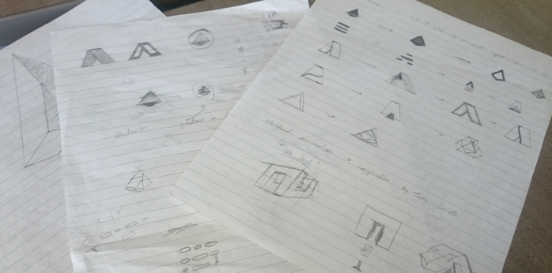
I even started creating digital versions to make sure, but I was still not satisfied with the results.
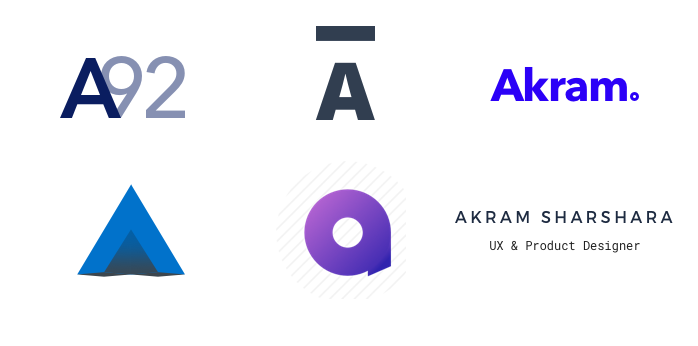
Finally Designing with a Purpose
Obviously, this process was frustrating, and not yielding any results. I decided to look back on the questions I initially et out to answer.
- 1. Who am I?
I'm a UX & Product Designer with background in Psychology.
- 2. What do I do?
I spend most of my time solving UX challenges, and designing products that combine strategy, technology and psychology. I do this by designing with a sound strategy and eye for simple, yet effective design.
- 3. What makes me unique as a designer?
My background in psychology, which allows me to understand people, and get a read on their true needs. This combined with my ability to understand and design for the big picture, as well as the little details. I’m a true product designer, as I think and build things from beginning to launch with sound strategy and execution.
- 4. Why would you want to work with me?
I’m flexible. I can tailor the experience towards the client to make sure they are comfortable, and I’ll function in a manner that works with their schedule and preferences. I love collaborating, so I want to encourage them to be as involved as they want to be.
These answers gave me a set of descriptors that I began to mull over. Eventually, three main points became apparent through this process.
- 1. Scientific & Analytical Background and Process
- 2. Simple, yet effective design
- 3. Outside the Box Thinking
These points began to create a mental image of a logo.
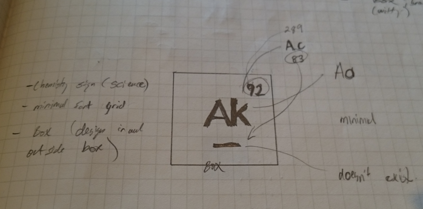
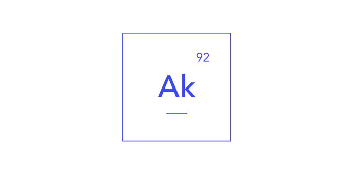
I then began to explore abstract branding concepts, as I thought I finally had a solid base concept to try out. After a bunch of sketching and experimentation (and lots of frustration), I ended up with a flat, yet multi-layered concept.
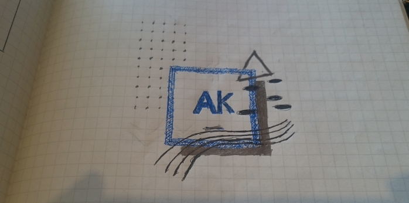
This was the light-bulb moment. I instantly connected the abstracted process to the voxel.
The Logo / Voxel
A voxel is a unit of graphic information that defines a point in three-dimensional space. I initially earned about the voxel from psychology lecture in first year, as it used to represent digital information in fMRI scans. During this process, I also started thinking about closure, and the gestalt theories that many UI designers use as a basis for usability based decisions.
I eventually ended up with what I call the “Uncanny Cube,” as I simplified the cube shape by taking out a single line (front to back), and let the closure process do the mental processing for me.
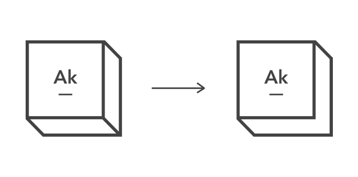
The interesting thing about voxels is the ability to rotate views, so I added a motion / view angle change, and created a motion based logo.
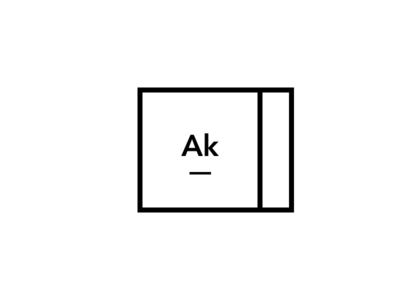
I was finally happy with the logo.
The Website
Once the logo was finalized, I started to think about the overall portfolio. I spent some time learning about grids, and how they functioned in terms of visual perception and balance. From there I started to workout different grid patterns, and alignments.
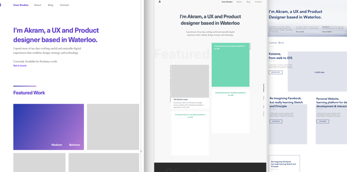
I started narrowing it down, but again, like the logo, nothing felt right. I started research different graphical style and concepts, and I ran across the International Typographic Style.
- "The International Typographic Style, also known as the Swiss Style, is a graphic design style developed in Switzerland in the 1950s that emphasizes cleanliness, readability and objectivity. Hallmarks of the style are asymmetric layouts, use of a grid, sans-serif typefaces and flush left, ragged right text. The style has a preference for photography. Many of the early International Typographic Style works featured typography as a primary design element and it is for this that the style is named." - Smeared Black Ink.
I started research this style, and realized I was conceptually aiming for a similar effect. I wanted the typography to be the main point, rather than the visuals. After all, much of works is based on analysis and logic, and any major visuals would be a distraction for that purpose.
I decided to adopt certain features of this style, and started building out a new prototype with this style, as well as some concepts I learned from the previous prototypes. Eventually, I ended up with this website.
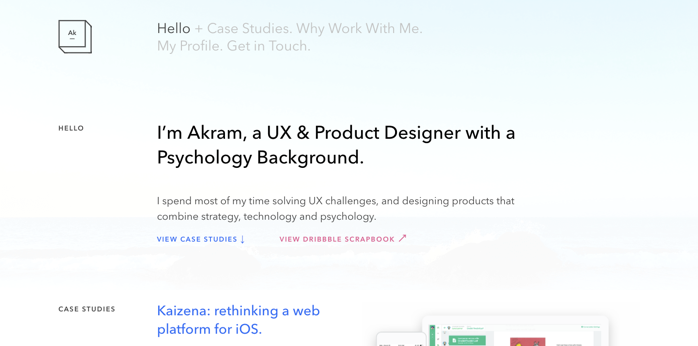
I made sure to go through the website, and create a grid system that not only made sense, but was balanced. This ensures maximum impact of content, and at the same time, reduces scrolling, and eye strain for reading (centered text is my enemy). I applied this grid throughout the site. I also started using the leading line method, which lines up all major text along a single vertical axis, guiding the reader through the content.
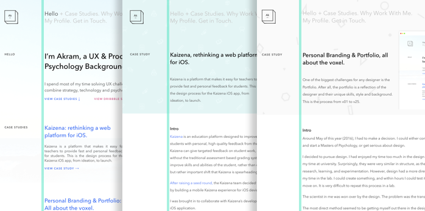
The benefits of such a grid system is ability to rearrange content blocks on demand, and make it responsive.
The Call to Action
I knew I wanted to do something a bit different in terms of website flow. I did not want people to illogically jump from one section to another. I placed Call to Action prompts that led the user through the site, with it’s ultimate purpose being to get in touch, or view my resumes.
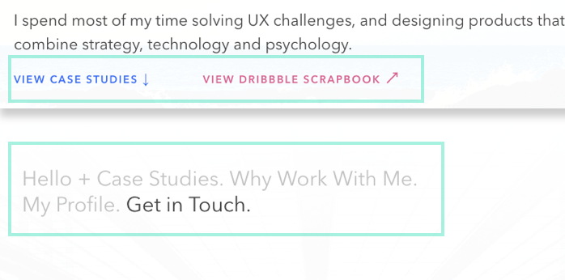
The nice thing about this site is it’s modular grid and it’s ability to place the CTA anywhere that makes logical sense. In a way, the website grid allowed me to experiment within structure, while still maintaining overall design coherency.
I was finally ready to code.
From Prototype to Code
In order for me to build this grid system, a simple bootstrap grid would not suffice. I had to create multiple breakpoints based on content, not standard media queries. This meant I had to create a custom solution.
I ran across Susy, which creates custom grids really easily using Sass. I ended up using Susy with the Compass compiler to create a grid-on-demand, and build out the site.
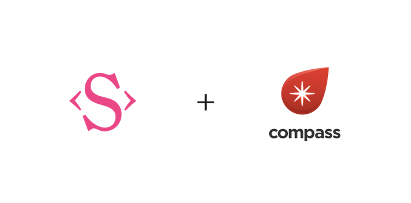
From there, I started to code, and build out breakpoints based on content, not standard screen sizes. After about a month of on/off part-time development, the website was ready. You can view the code on Github.
The Conclusion
While I enjoyed learning about Susy, and building out the site, I’m glad it’s finally up. Even though I made hundreds of decisions, I will continue to modify, and fix little details as I go along, but I think I now have a solid base to continue learning and building on. This portfolio also gave me the opportunity to learn about the basics of grid systems, and apply some of my product design knowledge to create an experience around the site, and convey my unique value proposition.